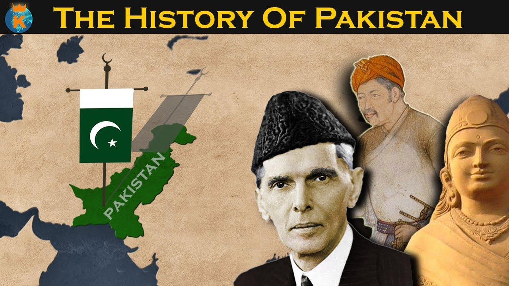
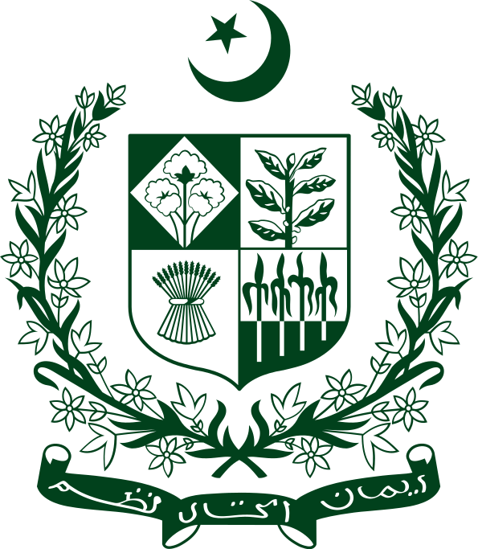

The history of Pakistan preceding the country's independence in 1947[1] is shared with that of Afghanistan, India , and Iran. Spanning the western expanse of the Indian subcontinentand the eastern borderlands of the Iranian plateau, the region of present-day Pakistan served both as the fertile ground of a major civilization and as the gateway of South Asia to Central Asia and the Near East.[2][3]


The ensuing millennia saw the region of present-day Pakistan absorb many influences—represented among others in the ancient, mainly Hindu-Buddhist, sites of Taxila and Takht-i-Bahi, the 14th-century Islamic-Sindhi monuments of Thatta, and the 17th-century Mughal monuments of Lahore. Dynasties emerging from the region encompassing modern-day Pakistan during this period included the Soomra dynasty, Samma dynasty, Sayyid dynasty, Kalhora dynasty, Talpurs, Langah Sultanate, Sultanate of Swat, Sial dynasty and the Shah Mir Dynasty. In the first half of the 19th century, the region was appropriated by the East India Company, followed, after 1857, by 90 years of direct British rule, and ending with the creation of Pakistan in 1947, through the efforts, among others, of its future national poet Allama Iqbal and its founder, Muhammad Ali Jinnah. Since then, the country has experienced both civilian-democratic and military rule, resulting in periods of significant economic and military growth as well as those of instability; significant during the latter was the secession of East Pakistan as the new nation of Bangladesh.